기계정비산업기사 (2014-08-17 기출문제)
1과목: 공유압 및 자동화시스템
1. 다음 공압 및 전기 회로도는 상자이송 장치 회로도이다. 이 회로도에서 실린더의 순서로 옳은 것은? (단, 실린더 전진은 +, 실린더후진은 -로 한다.)
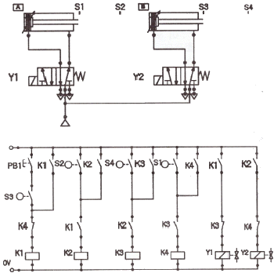
- A+, B+, B-, A-
- A+, B+, A-, B-
- A+, A-, B+, B-
- A+, B-, B+, A-
(정답률: 67%)

2. 그림과 같은 변위단계선도에 맞는 동작 순서는?
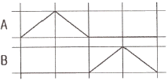
- A+, B+, B-, A-
- A+, A-, B+, B-
- A+, B+, A-, B-
- A+, B-, B+, A-
(정답률: 88%)
3. 유압의 제어밸브 중 포펫밸브 구조가 아닌 것은?
- 콘(cone) 내장 밸브
- 볼(ball) 내장 밸브
- 스풀(spool) 내장 밸브
- 디스크(disk) 내장 밸브
(정답률: 65%)
4. 다음과 같은 진리표를 만족하는 것은?
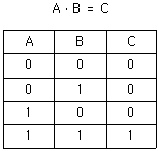
- 2압밸브
- 셔틀밸브
- 3/2 way 밸브의 병렬연결
- 3/2 way 정상상태 닫힘형
(정답률: 86%)
5. 높은 압력과 많은 토출량을 필요로 하는 유입장치에 적합한 펌프는?
- 기어펌프
- 나사펌프
- 베인펌프
- 회전피스톤펌프
(정답률: 66%)
6. 공압장치의 소음기에 관한 설명으로 옳지 않은 것은?
- 공압시스템의 에너지 효율을 향상시킨다.
- 팽창형, 홀수형, 간접형 등의 종류가 있다.
- 압축공기가 대기중에 방출될 때 발생하는 소음을 작게 한다.
- 공기압 회로에서 일을 마친 압축 공기를 대기 중에 방출하는 장치이다.
(정답률: 75%)
7. 유압기기 중 회로압이 설정압을 초과하면 유체압에 의하여 파열되어 압유를 탱크로 귀환시키고 동시에 압력상승을 막아 기기를 보호하는 역할을 하는 기기는?
- 체크 밸브
- 릴리프 밸브
- 유압퓨즈
- 압력 스위치
(정답률: 64%)
8. 피스톤의 왕복운동을 회전운동으로 변환하며 양 방향의 출력 토크가 같은 요동형 액추에이터는?
- 베인형 액추에이터
- 기어형 액추에이터
- 스크루형 액추에이터
- 래크와 피니언형 액추에이터
(정답률: 76%)
9. 실린더의 종류 중 전진과 후진시 추력이 동일하게 발생되는 형식은?
- 탠덤 실린더
- 케이블 실린더
- 격판 실린더
- 양 로드형 실린더
(정답률: 87%)
10. 면적이 1m2인 곳을 50N의 무게로 누를 때 면적에 작용하는 압력은?
- 50Pa
- 100Pa
- 500Pa
- 1000Pa
(정답률: 75%)
11. 공압 배관 연결 작업이나 용접 작업 시 발생되는 이물질이 공압 시스템으로 유입되어 고장이 발생하는데, 이로 인한 고장으로 가장 거리가 먼 것은?
- 압력스프링 손상으로 누설이 생긴다.
- 슬라이드 밸브의 고착 현상이 생긴다.
- 포펫 밸브의 시트부에 융착되어 누설이 생긴다.
- 유량제어 밸브에 융착되어 속도제어를 방해한다.
(정답률: 58%)
12. 유압 에너지를 이용하여 한정된 회전운동을 하는 기기는?
- 유압 모터
- 유압 실린더
- 유압 펌프
- 유압 요동 액추에이터
(정답률: 70%)
13. 다음의 진리표가 나타내고 있는 논리는?
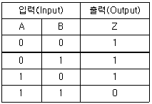
- NOR
- NAND
- EX-OR
- EQUIVALENT
(정답률: 72%)
14. 센서의 사용 목적과 가장 거리가 먼 것은?
- 정보의 수집
- 연산제어처리
- 정보의 변환
- 제어정보의 취급
(정답률: 68%)
15. 자동화시스템을 구성하는 각 단위기기를 하드웨어 및 소프트웨어적으로 연결하는 방법을 의 미하는 것은?
- 네트워크(network)
- 메카니즘(mechanism)
- 액추에이터(actuator)
- 프로세서(processor)
(정답률: 81%)
16. 다음 그림이 의미하는 시스템은?
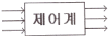
- 서보 시스템(servo system)
- 피드백 제어시스템(feedback contr이 system)
- 개회로 제어시스템(open loop control system)
- 폐회로 제어시스템(closed loop control system)
(정답률: 78%)
17. 다음의 기호가 나타내는 것은?
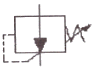
- 체크밸브
- 무부하밸브
- 감압밸브
- 급속배기밸브
(정답률: 68%)
18. 시스템회로의 구성 중 동작 상태 표현법에 관한 설명으로 틀린 것은?
- 기능선도 : 논리제어 문제를 표시하는 적절한 방법이다.
- 래더다이어그램 : 릴레이 시퀀스 제어 회로 표시에 이용된다.
- 변위-단계선도 : 작업순서가 표시되고 그 변위는 순서에 따라 선도에 표시되며 각 요소의 관계는 스텝별로 비교할 수 있다.
- PEC(Program flow chart) : 상업용, 기술용으로 논리순서를 표현하는 방법으로 광범위하게 사용된다.
(정답률: 54%)
19. 유압실린더의 수축과정에서 발생하는 힘을 나타내는 수식표현으로 옳은 것은?
- 압력 × 피스톤 면적
- 유량 ÷ 피스톤 면적
- 압력 × (피스톤 면적-로드면적)
- 유량 ÷ (피스톤 면적-로드면적)
(정답률: 70%)
20. 제어작업이 주로 논리제어의 형태로 이루어지는 곳에 AND, OR, NOT，플립플롭 등의 기본논리 연결을 표시하는 기호도를 무엇이라고 하는가?
- 논리도
- 제어선도
- 회로도
- 변위-단계선도
(정답률: 76%)
2과목: 설비진단관리 및 기계정비
21. 보전표준의 종류 중 진단(Diagnosis)방법, 항목, 부위, 주기 등에 대한 것이 표준화 대상인 것은?
- 수리표준
- 일상점검표준
- 작업표준
- 설비점검표준
(정답률: 76%)
22. 설비관리의 분업방식으로 가장 거리가 먼 것은?
- 기능분업
- 절충분업
- 전문기술분업
- 지역분업
(정답률: 71%)
23. TPM에서의 로스에 대하여 설비의 종합이용효율을 계산하기 위하여 측정하는 종류로 가장 거리가 먼 것은?
- 에너지 효율
- 시간 가동률
- 성능 가동률
- 양품율
(정답률: 72%)
24. 설비보전 내용을 기록하었을 때 장점으로 가장 거리가 먼 것은?
- 설비 수리주기의 예측이 가능하다.
- 설비 수리비용의 예측 및 판단자료가 된다.
- 설비에서 생산되는 생산량을 파악할 수 있다.
- 설비 갱신 분석의 자료로 활용할 수 있다.
(정답률: 78%)
25. 윤활유를 선정할 때 가장 기본적이고 먼저 검토해야 할 사항은?
- 적정 점도
- 운전 속도
- 급유 방법
- 관리 방법
(정답률: 83%)
26. 설비보전에서 효과 측정을 위한 척도로서 널리 사용되는 지수 중 고장 도수율의 공식은?
- (정미 가동시간/부하시간) × 100
- (고장횟수/부하시간) × 100
- (고장 정지시간/부하시간) × 100
- (보전비 총액/생산량) × 100
(정답률: 67%)
27. 제품에 대한 전형적인 고장률 패턴은 욕조곡선으로 나타낼 수 있다. 우발고장기간에 발생될 수 있는 원인과 관계가 없는 것은?
- 안전계수가 낮은 경우
- 스트레스가 기대 이상인 경우
- 사용자 과오가 발생한 경우
- 폐기되었을 경우
(정답률: 84%)
28. 진동에너지를 표현하는데 가장 적합한 것은?
- 피크값
- 평균값
- 실효값
- 최대값
(정답률: 77%)
29. 진동측정기기의 검출단 설치 방법 중 사용할 수 있는 주파수 영역이 가장 넓은 고정 방식은?
- 나사 고정
- 밀랍 고정
- 영구자석
- 손 고정
(정답률: 84%)
30. 시스템의 고유진동주파수 f를 2배로 증가시키기 위한 정적 처짐량 δ의 값은?
- 2배로 증가시킨다.
- 1/2로 감소시킨다.
- 4배로 증가시킨다.
- 1/4로 감소시킨다.
(정답률: 59%)
31. 듀폰(Dupont)사에 의해 제시된 보전요원 자신이 스스로 계획, 작업량, 비용, 생산성 측면으로 평가하여 미래의 목표를 제시하는 목표관리(MBO:management by object)시스템에서 계획의 기능에 해당되는 측정 요소는?
- 노동 효율
- 계획 달성률(예상효율)
- 월당 총공수에 대한 예방보전공수의 비율
- 총 설비투자에 대한 보전비의 비율
(정답률: 59%)
32. 아래 그림은 최적 수리주기를 나타낸 것으로 ( )안에 들어갈 내용은?
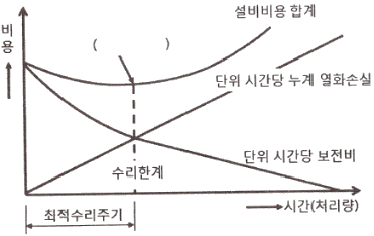
- 최소비용점
- 최소수리점
- 적정비용점
- 최고효율점
(정답률: 67%)
33. 회전체 질량중심의 불균형으로 인해 회전체의 회전주파수가 가장 크게 나타나는 것은?
- 미스얼라인먼트(misalignment)
- 언밸런스(unbalance)
- 공진(resonance)
- 윤활(Iubrication)부족
(정답률: 66%)
34. 고정자산의 구입가격에서 법정 잔류가치를 뺀 차액을 법정 내용 연수 기간 동안에 매년 분할하여 손금(損金)의 일종으로 취급하는 비용은?
- 자본 회수비
- 감가 상각비
- 이익 할인비
- 처분 가치비
(정답률: 67%)
35. 설비보전조직의 유형에서 전문 보조원에 대하여 보전 책임이 집중인지 분산인지에 대한 분류 중 조직상-배치상 모두 분산형태인 보전 조직은?
- 집중 보전
- 지역 보전
- 부분 보전
- 절충 보전
(정답률: 56%)
36. 일반적으로 사람이 들을 수 있는 가청 주파수의 범위는?
- 0.2~30000Hz
- 0.1~10000Hz
- 10~30000Hz
- 20~20000Hz
(정답률: 82%)
37. 회전기계에서 발생하는 이상현상 중 언밸런스나 베어링 결함 등의 검출에 널리 사용되는 설비진단 기법은?
- 오일분석법
- 진동법
- 응력해석법
- 페로그래피법
(정답률: 82%)
38. 제품별 배치 형태의 특징으로 틀린 것은?
- 작업의 흐름 판별이 용이하며 조기발견, 예방, 회복 등이 쉽다.
- 공정이 확정되므로 검사 횟수가 적어도 되며 품질관리가 쉽다.
- 작업을 단순화할 수 있으므로 작업자의 훈련이 용이하다.
- 정체 시간이 길기 때문에 재공품(在工品)이 많다.
(정답률: 80%)
39. 설비나 부품의 고장결과를 다시 원상태로 회복시키기 위한 설비보전 방법은?
- 개량보전
- 사후보전
- 예방보전
- 자주보전
(정답률: 75%)
40. 공장 내의 회전기계 간이진단 대상 설비 중 주요 진단 대상으로 가장 거리가 먼 것은?
- 생산과 직접 관련된 설비
- 부대 설비인 경우라도 고장이 발생하면 큰 손해가 예측되는 설비
- 고장이 발생 시 2차 손실이 예측되는 설비
- 정비비가 낮은 설비
(정답률: 79%)
3과목: 공업계측 및 전기전자제어
41. 2진수 1100을 10진수로 바꾸면 어떻게 되는가?
- 10
- 11
- 12
- 13
(정답률: 73%)
42. 정전용량 1[uF]의 콘덴서가 60[Hz]인 전원에 대한 용량 리액턴스[Ω]의 값은 약 얼마인가?
- 2500
- 2600
- 2653
- 2753
(정답률: 65%)
43. 측정량과 크기가 거의 같은 미리 알고 있는 양의 운동을 준비하여 운동과 측정량의 차이로부터 측정량을 구하는 방법은?
- 영위법
- 편위법
- 치환법
- 보상법
(정답률: 58%)
44. 다이오드의 최대 정격 중 연속적으로 가할 수 있는 직류전압의 최대 허용값을 나타내는 것은?
- 최대 첨두 역방향 전압
- 최대 직류 역방향 전압
- 최대 침두 순방향 전압
- 최대 평균 정류 전압
(정답률: 60%)
45. 연산증폭기(op-amp)의 입력단과 출력단의 구성은?
- 1개의 입력과 1개의 출력
- 1개의 입력과 2개의 출력
- 2개의 입력과 1개의 출력
- 2개의 입력과 2개의 출력
(정답률: 78%)
46. 전기세탁기, 승강기 및 자동판매기는 다음 중 어떤 제어에 가장 적합한가?
- 폐회로제어
- 공정제어
- 시퀀스제어
- 되먹임제어
(정답률: 78%)
47. 입력 임피던스가 높고, 100kHz 정도의 고속 스위칭이 가능하며, 대전류의 출력 특성을 고루 갖추고 있는 사이리스터의 대체 소자로서, 범용 인버터, 스위칭모드 전원장치, 무정전 전원장치 등의 대폭적인 성능개선에 기여한 전력제어용 반도체 소자는?
- 실리콘 제어 정류기(SCR)
- 단접합 트랜지스터(UJT)
- 프로그램가능 단접합 트랜지스터(PUT)
- 절연 게이트형 양극성 트랜지스터(IGBT)
(정답률: 56%)
48. 절연저항을 측정하는 계기는?
- 계기용변류기
- 계기용변압기
- 전력계
- 메거
(정답률: 79%)
49. 시퀀스 제어에 관한 다음의 설명 중 옳지 않은 것은?
- 전체 계통에 연결된 제어신호가 동시에 동작할 수도 있다.
- 시간지연 요소도 사용된다.
- 기계적 계전기도 사용된다.
- 조합 논리회로도 사용된다.
(정답률: 68%)
50. 전계효과 트랜지스터의 특징에 해당되지 않는 것은?
- 유니폴라(Unipolar) 소자이다.
- 바이폴라(Bipolar) 소자이다.
- 전압제어 소자이다
- 저전력증폭기의 입력단에 적합하다.
(정답률: 54%)
51. 다음 중 트랜지스터의 접지방식이 아닌 것은?
- 게이트접지
- 이미터접지
- 베이스접지
- 컬렉터접지
(정답률: 62%)
52. 다음 중 PLC의 전원부에 대한 잡음대책이 아닌 것은?
- 스파크 킬러를 사용한다.
- 필터를 사용한다
- 트랜스를 사용한다.
- 트랜스와 필터를 사용한다.
(정답률: 74%)
53. 2개의 입력을 가지는 경우 두 입력이 서로 다를 때 출력이 “1" 이 되고 같을 때는 출력이 “0" 이 되는 배타적 OR 회로의 논리식은?
- Y = AㆍB
- Y = A+B
- Y = A⊕B
- Y = A◉B
(정답률: 73%)
54. 직류발전기의 구성요소 중 자속을 만들어 주는 부분은?
- 계자
- 전기자
- 정류자
- 브러시
(정답률: 54%)
55. 신호 전송시 노이즈(noise) 대책으로 접지를 할 때의 주의사항 중 틀린 것은?
- 1점으로 접지할 것
- 가능한 가는 도선을 사용할 것
- 병렬 배선으로 할 것
- 실드 피복은 필히 접지할 것
(정답률: 65%)
56. 다음과 같은 블록선도에서 전달함수로 알맞은 것은?
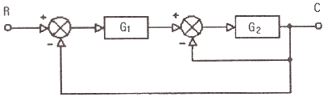
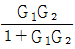
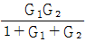
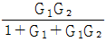
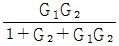
(정답률: 54%)
57. 계측기가 미소한 측정량의 변화를 감지할 수 있는 최소 측정량의 크기를 무엇이라 하는가?
- 정밀도
- 정확도
- 오차
- 분해능
(정답률: 72%)
58. 전기가 잘 통하는 성질을 도전율이라 한다. 도전율이 가장 좋은 물질은?
- 은
- 구리
- 금
- 알루미늄
(정답률: 65%)
59. 다음 그림과 같이 휘트스톤브리지 회로가 구성되었다. 슬라이드 저항의 브러시 위치를 움직여 검류계 G가 0을 지시하고 브리지가 평형을 이루었을 경우의 관계식은?
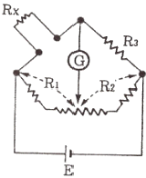
- RxR2 = R1R3
- R1R2 = RxR3
- Rx + R2 = R1 + R3
- R1 + R2 = Rx + R3
(정답률: 66%)
60. 피드백제어에서 반드시 필요한 장치는?
- 조작기
- 비교기
- 검출기
- 조절기
(정답률: 70%)
4과목: 기계정비 일반
61. 원심펌프 축의 밀봉장치 요소로 옳은 것은?
- 축 슬리브
- 스터핑 박스
- 라이너 링
- 케이싱 웨어링
(정답률: 75%)
62. 수격현상에 의해 발생되는 피해현상이 아닌 것은?
- 압력강하에 따른 관로의 파손
- 펌프 및 원동기의 역회전 과속에 따른 사고발생
- 수격현상 상승압에 따라 펌프, 밸브, 관로 등의 파손
- 관로의 압력상승에 의한 수주 분리로 낮은 충격압 발생
(정답률: 68%)
63. 전동기 베어링부분에서 발열이 발생할 때 주요 원인이 아닌 것은?
- 벨트의 장력과대
- 커플링 중심내기 불량
- 베어링의 조립불량
- 전동기 입력전압의 변동
(정답률: 73%)
64. V 벨트에 관한 설명으로 옳은 것은?
- V 벨트는 미끄럼이 발생되지 않는다.
- V 벨트의 각도는 38도의 마름모꼴 형상이다.
- 풀리 홈의 각도는 V벨트 크기에 관계없이 일정하다.
- V 벨트의 단면 형상은 M, A, B, C, D, E 여섯 가지이다.
(정답률: 81%)
65. 입력축과 출력축에 드라이브 콘을 설치하고 그 바깥 가장자리에 강구를 접촉시켜 변속하는 변속기는?
- 컵 무단 변속기
- 디스크 무단 변속기
- 링 원추 무단 변속기
- 플랜지 디스크 가변 변속기
(정답률: 58%)
66. 다음 중 펌프 흡입밸브로 차단용이 아닌 것은?
- 플랩 밸브(flap valve)
- 앵글 밸브(angle valve)
- 글로브 밸브(glove valve)
- 슬루스 밸브(sluice valve)
(정답률: 55%)
67. 두 기어 사이에 있는 기어로 속도비에 관계없이 회전방향만 변하는 기어는?
- 웜 기어
- 아이들 기어
- 구동 기어
- 헬리컬 기어
(정답률: 70%)
68. 펌프에서 발생하는 이중현상 중 수격현상에 관한 설명으로 옳은 것은?
- 관로의 유체가 비중이 낮아 흐름속도가 빨라지는 현상이다.
- 펌프내부에서 흡입양정이 높아 유체가 증발하여 기포가 생기는 현상이다.
- 배관을 흐르는 유체에 불순물이 섞여 관로에서 충격파를 발생시키는 현상이다.
- 배관에 흐르는 유체의 속도가 급격한 변화에 의해 관내 압력이 상승 또는 하강하는 현상이다.
(정답률: 82%)
69. 두 축 을 동시에 센터링할 때 측정 준비 작업이 아닌 것은?
- 커플링의 외면을 세척한다.
- 다이얼 게이지의 오차 및 편차를 구한다.
- 펌프측 베이스 하단에 라이너를 삽입한다.
- 커플링의 외면에 0°, 90°, 180°, 270°의 방향을 표시한다.
(정답률: 63%)
70. 측정을 할 때 측정치와 참값과의 차를 오차라고 하는데 측정기에 의한 오차가 아닌 것은?
- 지시 오차
- 되돌림 오차
- 흔들림 오차
- 탄성변형 오차
(정답률: 56%)
71. 선반에서 나사 절삭 바이트의 설치 및 측정에 사용되며 게이지 위에 있는 스케일은 인치당 나사수를 정하는데 사용되는 것으로 맞는 것은?
- 블록 게이지
- 틈새 게이지
- 센터 게이지
- 스크류 피치 게이지
(정답률: 43%)
72. 축이음의 종류에서 두 축의 관계 위치에 따라 종류를 연결한 것 중 관련이 없는 것은?
- 플렉시블 커플링 : 2개의 축이 서로 교차되는 것
- 그리드 플렉시블 커플링 : 경강선으로 된 그리드의 탄성을 이용한 것
- 유니버설 조인트 이음 : 2개의 축이 어느 각도를 가지고 교차되는 것
- 올덤 커플링 축 이음 : 2개의 축이평행이고, 축선이 어긋나 있는 것
(정답률: 57%)
73. 구멍의 치수가 축의 치수보다 작을 때의 끼워맞춤은?
- 억지 끼워맞춤
- 중간 끼워맞춤
- 헐거운 끼워맞춤
- 가열 끼워맞춤
(정답률: 79%)
74. 일반 산업기계에서 축의 구부러짐으로 발생하는 현상으로 볼 수 없는 것은?
- 베어링의 발열
- 기어의 이상마모
- 축의 경도 저하
- 축의 진동 및 소음
(정답률: 47%)
75. 감압밸브에 관한 설명으로 옳은 것은?
- 밸브의 양면에 작용하는 온도차에 의해 자동적으로 작동한다.
- 피스톤의 왕복운동에 의한 유체의 역류를 자동적으로 방지한다.
- 내약품, 내열 고무제의 격막 판을 밸브시트에 밀어 붙인 밸브이다.
- 유체압력이 높을 경우 자동적으로 압력을 감소시키며 감소된 압력을 일정하데 유지한다.
(정답률: 80%)
76. 기계조립작업 시 주의사항으로 틀린 것은?
- 베어링부는 녹 발생이 없도록 한다.
- 이물질 제거 등 청소를 깨끗이 한 후 조립한다.
- 각 부품이 도면과 같이 조합되어 있는지 확인한다.
- 정밀기계일 경우 기계의 보호를 위하여 반드시 장갑을 착용하고 작업한다.
(정답률: 87%)
77. 원심형 통풍기 중 실로코 통풍기의 베인 방향으로 옳은 것은?
- 전향베인
- 경향베인
- 후향베인
- 회전베인
(정답률: 71%)
78. 센터링 불량 시 나타나는 현상이 아닌 것은?
- 진동이 크다.
- 축 하나만 회전된다.
- 베어링부 마모가 심하다.
- 회전력 전달이 원활하지 못한다.
(정답률: 77%)
79. 축 방항에 인장 또는 압축력이 작용하는 두 축의 결합에 사용하는 기계요소는?
- 핀
- 코터
- 키이
- 스플라인
(정답률: 66%)
80. 펌프에 캐비테이션이 발생하면 성능저하와 펌프를 손상시킨다. 캐비테이션 방지방법으로 적합하지 않은 것은?
- 흡입관을 크게 한다.
- 펌프의 회전수를 높인다.
- 양 흡입형 펌프를 사용한다.
- 흡입양정을 되도록 낮게 한다.
(정답률: 69%)
따라서, A 실린더와 B 실린더가 모두 전진할 때는 A+, B+가 되고, A 실린더는 후진하고 B 실린더는 전진할 때는 A-, B+가 된다. 마찬가지로, A 실린더와 B 실린더가 모두 후진할 때는 A-, B-가 되고, A 실린더는 전진하고 B 실린더는 후진할 때는 A+, B-가 된다.
따라서, 옳은 순서는 A+, B+, A-, B-이다.